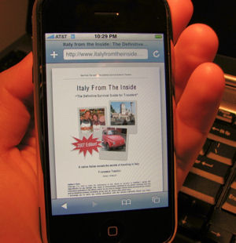

I've been playing with my iPhone for over a week now, and I've to say that I like it a lot. I spent some time brainstorming new interesting ways to use this device in preparation for a trip to Italy. Here are a few ideas that came to my mind: - Listen to Italian music (get into the Dolce Vita mood) - Watch an Italian movie converted from a DVD - Practice your Italian with a language podcast (for your kids there is my daughter Silvia) - Watch a travel podcast from Rick Steves' (or one of ours) - Browse pictures of Italy and dream about your next trip - Store a photo of your passport (just in case) - Use the Google mapping feature to study your itinerary (even point to point directions) - Write some last minute ideas using the note taking feature - Take our eBook with you (yes, the iPhone can view PDF files) - Store useful contact information of restaurants, hotels, friends, etc. - Download some audio guides for the key attractions - Use it as an alarm clock - Take some pictures of your trip - Find out what's the weather like in Rome - Calculate the conversion rate from Euros in Dollars - Make your friends jelous by sending them an email / SMS from the airport - Use the calendar to plan your days - Browse the internet to find out about the latest train strike - or just use it as a phone (careful about those international charges!) Unlike my video iPod, the iPhone doesn't work as a backup storage for my digital pictures. Oh well... Did I forget anything else in my list?